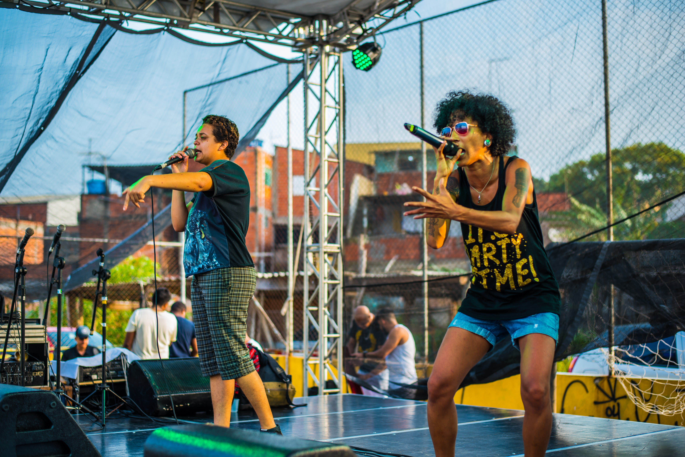
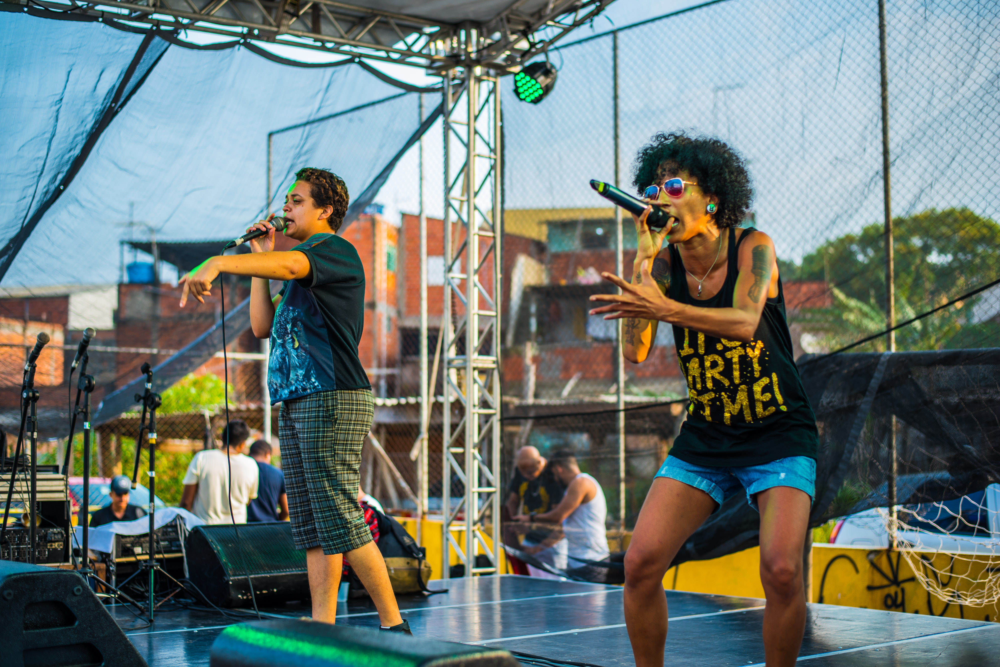

Periferia Preta é um coletivo formado na Fazenda da Juta, região de Sapopemba, em São Paulo/SP. Desde 2013, artistas, arte-educadoras (es) e entusiastas do projeto utilizam a Periferia Preta como ferramenta de ação social e inserção artística na Zona Leste, promovendo projetos diversos pautados em frentes variadas, como música, teatro, saraus, rodas de samba, entre outras.
E em meados de 2014 fomos contemplados com o edital PROGRAMA CULTURA VIVA do MINC e Secretária Municipal de Cultura da cidade de São Paulo. O projeto durante os dois anos seguintes dedicou-se a formação de jovens agentes culturais. Neste mesmo ano foi criado em parceria com o recém-nascido Ponto de Cultura o evento Grito Cultura, foram 8 horas de uma programação artística marginal que defendia a descentralização e desmistificação de uma cultura central, com fronteiras.

Em 2015 percebemos a urgência de intervir em mão oposta ao processo corrente de invisibilização da pessoa preta. Rediscutimos os rumos do nosso movimento e nos arregimentamos enquanto Coletivo Periferia Preta. Com reuniões pontuais, uma organização apurada, com apresentações custeadas através de doações dos moradores e mais uma vez em parceria com o Ponto de Cultura lançamos, em 2015, a primeira edição do Festival PERIFERIA PRETA. A ação reuniu múltiplas manifestações artísticas, políticas e (per)formativas das regiões de São Mateus, Guaianazes, Santo André, Cidade Tiradentes, Poá, Parelheiros e Grajaú criando uma rede de articulação com as quebradas vizinhas colocando a Fazenda da Juta, bairro histórico de luta, no circuito cultural periférico.
No ano de 2016 organizado principalmente pelas agentes culturais recém formadas pelo Ponto de Cultura Fazenda da Juta e custeada com a verba do Ponto a 2o edição trouxe nomes como Liniker e os Caramelows, Linn da Quebrada, Embalanço Sambarock, Luana Hansen entre outros, e a 1ª edição da feira de empreendedoras pretas.
Em 2017, novamente sem verba, contamos com a assessoria da Oxfam Brasil, dos moradores do bairro e outros coletivos. Juntos realizamos oficinas de dança, capoeira, batalha de rap, apresentação de maracatu e Sound System na terceira edição do festival.
O Coletivo foi contemplado pelo Programa VAI - Programa de iniciativas culturais, onde ao longo dos 8 meses de execução do projeto realizou 6 ações culturais nomeadas de #AçãoPreta: Roda de Conversa, Oficina de Poesia Marginal, Sarau da Juta, Samba para Marielles e Luanas, Cine Juta - e a 4° Edição de nosso festival "Periferia Preta"
O Coletivo Periferia Preta foi contemplado pela Lei de Fomento à Cultura da Periferia de São Paulo de 2020, e em Fevereiro demos início à um projeto que surgiu lá no comecinho da nossa história: criar um lugar seguro para corpos pretos, LGBTQIA+ e periféricos vivenciarem as mais diversas manifestações artístico-culturais. Isto deixou de ser um sonho para se tornar um Espaço de Artes Pretas e TLGBQIAP+ com sala, quintal, cozinha e jardim. Além de promover encontros para produção e troca de saberes entre artistas, produtories culturais e a comunidade do distrito de Sapopemba, este espaço representa nossa trajetória e dois dos nossos principais objetivos: (re)abrir uma sede física para acolhimento e valorização de iniciativas locais e ampliar o acesso à cultura e lazer de moradores da nossa região.


 
